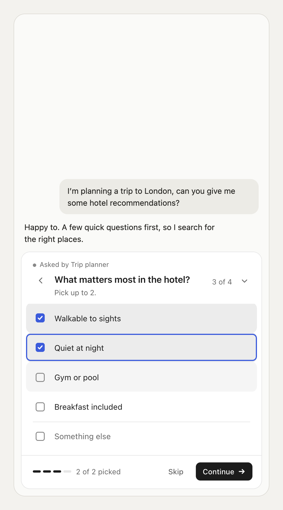
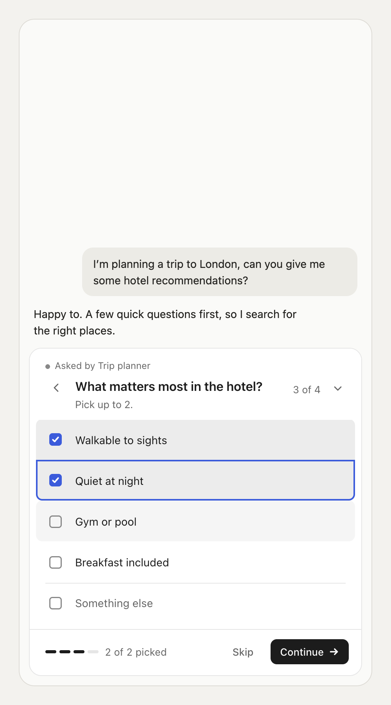
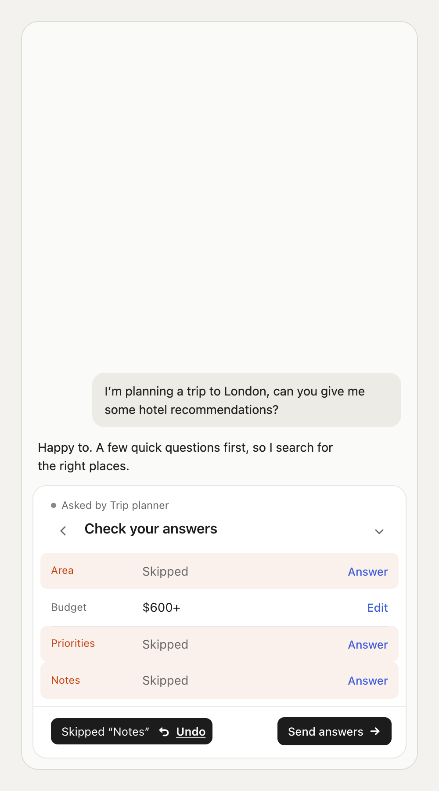
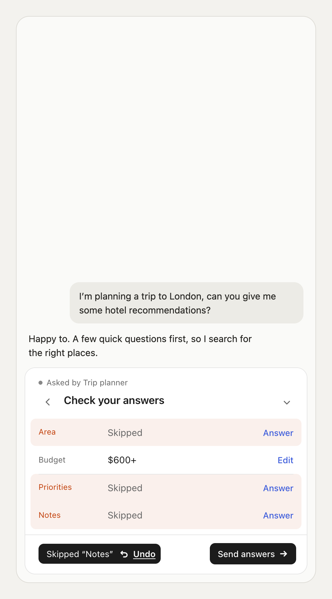
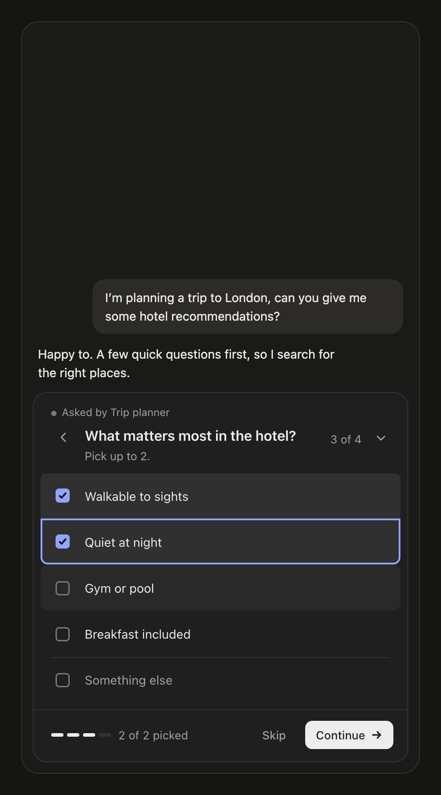
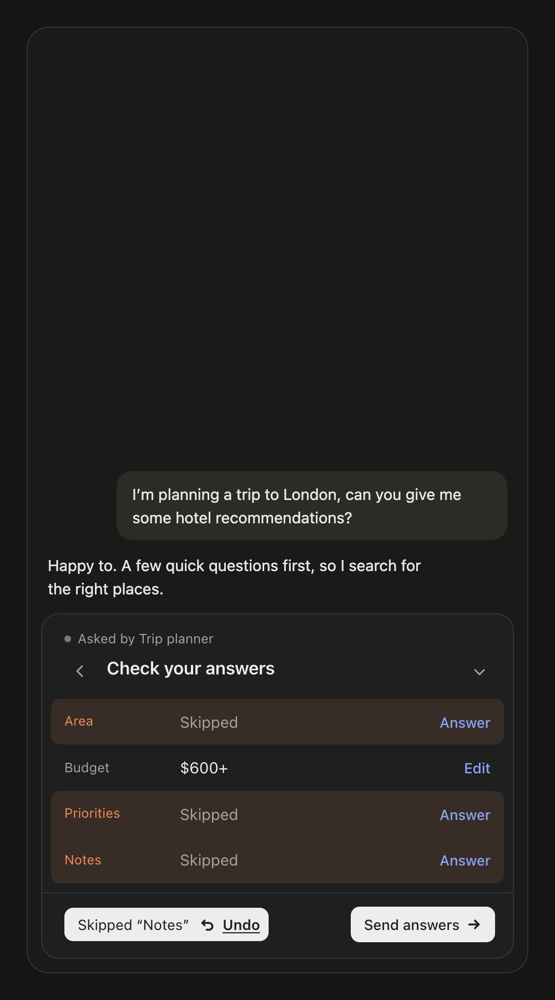
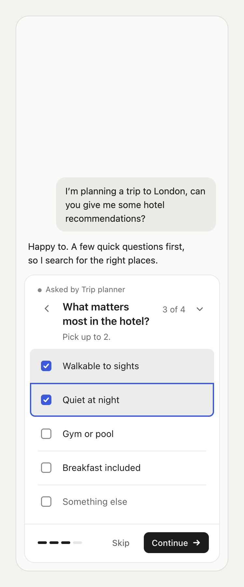

Question (Mari, 11 Oct 2026): when several rows are filled at once (two picks, a pick next to a hovered row, skipped rows on review), they touch and look like they overlap. Should there be space between them?
Tried (Claude's prototype, CSS injected into the live component; src/ untouched): Gap: each fill drawn 2px inside its row, so neighbours show a 4px gap, with no layout change. Merge: filled neighbours join into one block with only the outer corners round.
Outcome (11 Oct 2026): Mari chose Gap, shipped in round 19 (process/19-row-gap/). Two things the prototype didn't show, found while building it: the background shorthand on selected rows reset the clip (so picks painted into the gap; a test caught it), and contrast themes paint transparent borders, so the inset is turned off there.
| Todayfills touch | Gap4px between fills, same height | Mergeone block per run | |
|---|---|---|---|
| Multi · two picks + hover (light) |  |  | |
| Review · skipped rows (light) |  |  | |
| Multi (dark) |  | ||
| Review (dark) |  | ||
| Multi · 375 |  |
CSS: css/gap.css, css/merge.css. Rendered with design/explorations/01-focus-and-colour/shots-with-css.mjs.